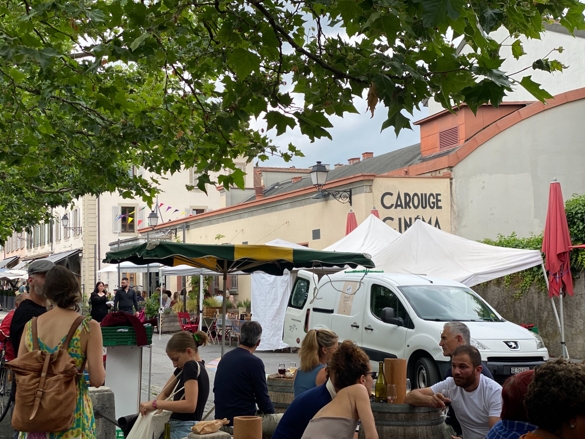

Geneva · Switzerland · HoodTip
Carouge
What Geneva would be if it relaxed. Italian streets, Saturday market, natural wine on a barrel.
Carouge is technically a separate municipality from Geneva, and it feels like it. The streets are arcaded, the buildings are Italian — it was built by the King of Sardinia in the 18th century as a deliberate counterpoint to Protestant Geneva across the river. The vibe stuck.
The Saturday market is the main event. It fills the Place du Marché from 8h to 14h with producers, a natural wine guy, a Breton oyster guy, a chocolatier, a flower seller, street food, and usually someone playing violin between the stalls. Come hungry, leave heavy.
The neighbourhood itself is walkable, dense with good cafés and restaurants, and completely un-curated for tourists. That's the point.



Saturday in Carouge has a rhythm to it. Arrive early, walk the stalls, make your decisions slowly. Paul-Henri will let you taste everything. The oyster guy will shuck to order. There is nowhere to rush to.